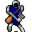

Mustura¶Where to find Mustura: Brimhaven: Brimhaven 4, Brimhaven house 1
{ .sprite }
| Type | NPC (can be spoken to; cannot be attacked) |
| Found in | Brimhaven |
| Entry ID | brv_guard_captain |
| Introduced | v0.7.11 |
Locations¶
| Map | Region | Up to | Notes |
|---|---|---|---|
| Brimhaven 4 | Brimhaven | 1 | – |
| Brimhaven house 1 | – | 1 | Appears later, during a quest |
Quests¶
- A place to forge: stages 30, 35, 40, 50
- Much water: stages 100, 110, 200
- Brimhaven story flags (hidden flag): stages 110, 120
- Undertell story flags (hidden flag): stage 15
Dialogue simulator¶
Set your quest stages and items, then talk to Mustura. Same rules as the game: same checks, same options, same effects.
Rules verified against v0.8.18 game code (ConversationController.java) and dialogue data.
Dialogue (25 lines)
Exactly as in the game files. Each line appears once; links jump to where a choice leads.
brv_guard_captain_10 (silent check: the first matching branch below is taken)
- branch 1 (if reached stage 200 of Much water) → brv_guard_captain_and_rich_man
- branch 2 (if reached stage 110 of Much water) → brv_guard_captain_25
- branch 3 → brv_guard_captain_15
brv_guard_captain_and_rich_man (silent check: the first matching branch below is taken)
- branch 1 (if reached stage 15 of Undertell story flags (hidden flag); NOT reached stage 50 of A place to forge) → talk_about_white_house_20
- branch 2 (if reached stage 120 of Brimhaven story flags (hidden flag)) → brv_guard_captain_and_rich_man_50
- branch 3 (if reached stage 110 of Brimhaven story flags (hidden flag)) → brv_guard_captain_and_rich_man_40
- branch 4 → brv_guard_captain_and_rich_man_10
brv_guard_captain_25 Mustura: “Hello again. Did you find out who destroyed the dam?”
- “No, not yet.” → conversation ends
- “[Lie] The two brothers living in the north part of the eastern town destroyed the dam.” → brv_guard_captain_22
- “Alkapoan was behind it. Here are letters proving his guilt. He is waiting at his home for you to arrest him.” (if hand over 1× Alkapoans's letters) → brv_guard_captain_30
brv_guard_captain_15 Mustura: “Always stay on the right side of the law.”
- Next (if reached stage 100 of Brimhaven story flags (hidden flag)) → brv_guard_captain_20
talk_about_white_house_20 Alkapoan: “What do you want, foolish child?” — effects: sets stage 15 of Undertell story flags (hidden flag)
- “I've collected your 'operation tax' from the dealer. Now let's finish our deal.” (if latest stage of A place to forge is 45) → alkapoan_lie_wh_50
- “[lie] I want the glowing white house. I need a place to hide from my parents.” (if NOT reached stage 30 of A place to forge; NOT reached stage 45 of A place to forge) → alkapoan_lie_wh_10
- “Nocmar has sent me to get back what was once his.” (if NOT reached stage 35 of A place to forge) → alkapoan_nocmar_wh_10
brv_guard_captain_and_rich_man_50 Mustura: “You better disappear soon, or I might find some evidence that you are the evil spy from Loneford.”
- “We are all reasonable people here. Let us settle this, shall we?” → talk_about_white_house_10
brv_guard_captain_and_rich_man_40 Mustura: “It seems Alkapoan's letters accidentally fell into a fire and I am sure some unknown evil spies from Loneford destroyed the dam. You better disappear soon, or I might find some evidence that you are the evil spy from Loneford.” — effects: sets stage 120 of Brimhaven story flags (hidden flag)
brv_guard_captain_and_rich_man_10 Alkapoan: “[Laughs] You again. Welcome back, foolish child.”
- “Laugh while you can. The captain is here and now you will get your deserved punishment!” → brv_guard_captain_and_rich_man_20
brv_guard_captain_22 Mustura: “You are accusing poor but honest people. Do you have any proof?”
- “No, not yet, but I will try to help you.” → brv_guard_captain_23
brv_guard_captain_30 Mustura: “We will check this and if it is true then you can leave the town.” — effects: sets stage 200 of Much water, clears stage 100 of Brimhaven story flags (hidden flag), removes monsters from brimhaven4, removes monsters from brimhaven4, removes monsters from brimhaven4, removes monsters from brimhaven3, removes monsters from brimhaven_house1, spawns monsters on brimhaven1, spawns monsters on brimhaven_house1, spawns monsters on brimhaven_house1
brv_guard_captain_20 Mustura: “Do you know anything about the destruction of the dam?”
- “[Lie] I have no idea, but I will try to help you.” → brv_guard_captain_40
- “[Lie] The two brothers living in the north part of the eastern town destroyed the dam.” → brv_guard_captain_22
- “Alkapoan was behind it. Here are letters proving his guilt. He is waiting at his home for you to arrest him.” (if hand over 1× Alkapoans's letters) → brv_guard_captain_30
alkapoan_lie_wh_50 Mustura: “Sure thing! As soon as I see forty-five thousand gold, you will see the deed to the house. Remember, you have my 'operation tax' gold too.”
- “Forty-five thousand?! I don't have that kind of gold.” (if NOT have 45,000 gold) → alkapoan_not_enough_gold
- “Here, take the fourty-five thousand and give me the deed and the key.” (if pay 45,000 gold) → alkapoan_nocmar_wh_give_deed
alkapoan_lie_wh_10 Mustura: “You want the house for yourself? Now that is interesting. Most people shy away from that cursed glow, but I can see ambition in your eyes. Hm. I could let it go for forty thousand gold...but gold alone won't earn my trust. If I sell it to…” — effects: sets stage 35 of A place to forge
- “Proof, how?” → alkapoan_lie_wh_20
alkapoan_nocmar_wh_10 Mustura: “Ah...so this is for Nocmar? The man who couldn't pay his debt and lost everything. And now you want me to just hand it back? Hah! If he wants redemption, let him pay double what he owed. Fifty thousand gold, no less. You bring me that…” — effects: sets stage 30 of A place to forge
- “Fifty thousand gold?! Are you nuts? How about twenty-five housand?” → alkapoan_bargin
- “Fifty thousand gold? I don't have it.” (if NOT have 50,000 gold) → alkapoan_not_enough_gold
- “Here, take the fifty thousand and give me the deed and the key.” (if pay 50,000 gold) → alkapoan_nocmar_wh_give_deed
talk_about_white_house_10 Mustura: “You are reasonable?”
- “Whatever!” (if NOT reached stage 10 of A place to forge) → conversation ends
- “Oh, for the purposes of this conversation? Yeah, yeah I am. I want to talk to Alkapoan, not you!” (if latest stage of A place to forge is 20) → talk_about_white_house_20
brv_guard_captain_and_rich_man_20 Mustura: “Well...”
brv_guard_captain_23 Mustura: “Come back when you have a proof, and until then stop accusing people. In the meantime, you are not allowed to leave the city.” — effects: sets stage 100 of Much water, sets stage 110 of Much water
brv_guard_captain_40 Mustura: “Thank you. But be aware that you are not allowed to leave the town until we have found out how the dam was destroyed.” — effects: sets stage 110 of Much water, sets stage 100 of Much water
alkapoan_not_enough_gold Mustura: “Well, then you better go find it.”
alkapoan_nocmar_wh_give_deed Mustura: “A pleasure doing business with you.” — effects: sets stage 50 of A place to forge, gives 1× White house deed, gives 1× White house key
alkapoan_lie_wh_20 Mustura: “There's a small matter I want handled. Do this, and the price will stay at forty thousand. Refuse, and I'll reconsider whether you're worth the trouble.”
- “What do you want from me?” → alkapoan_lie_wh_30
alkapoan_bargin Mustura: “Yeah, sure, twenty-five thousand and I take a couple of your fingers too?”
brv_guard_captain_and_rich_man_30 Alkapoan: “Let's see who is laughing in the end. The captain came to talk, not arrest me. Now she owns a new horse and I will be earning a lot of money with the necessary repairing of the dam and later the food harvesting. I call this a win-win.” — effects: sets stage 110 of Brimhaven story flags (hidden flag)
alkapoan_lie_wh_30 Mustura: “If you want the house, I'll need proof that you can handle business my way. There's a card dealer who runs games in the back of the tavern here in Brimhaven. He operates because I allow it. That means he owes me a regular fee, call it an…”
- “Okay?” → alkapoan_lie_wh_40
alkapoan_lie_wh_40 Mustura: “He's late. Bring me what he owes, and don't let him wiggle out of it. I want every bit of the five thousand gold. When you return with the gold, I'll know you're serious, and the deed will be yours for forty thousand more.” — effects: sets stage 40 of A place to forge
- “I'll be right back. Keep that deed handy.” → conversation ends
Version history¶
| Version | Change |
|---|---|
| v0.7.11 | Added Dialogue: 14 lines added |
| v0.7.13 | Dialogue: 3 lines changed · text: “Better you disapear soon or I might find some evidence that you are t…” → “You better disappear soon, or I might find some evidence that you are…” · text: “Alkapoan's letters accidently fell into a fire and I am sure some unk…” → “It seems Alkapoan's letters accidentally fell into a fire and I am su…” |
| v0.8.18 | Dialogue: 11 lines added, 2 lines changed |
Verified against v0.8.18 and every earlier release back to v0.7.0 (game data compared release by release).
Technical information
| Entry ID | brv_guard_captain |
| Spawn group | brv_guard_captain |
| Loot table | – |
| Conversation | brv_guard_captain_10 |
| Faction | – |
| Movement | – |
| Icon | monsters_ld2:49 |
| Defined in | res/raw/monsterlist_brimhaven.json |
Raw data:
{
"id": "brv_guard_captain",
"name": "Mustura",
"iconID": "monsters_ld2:49",
"phraseID": "brv_guard_captain_10"
}
Community notes¶
Written by players, not generated from game data. Observations: what players notice in-game · Lore: the in-world story · Trivia: real-world facts, references, development history · Theory / speculation: unconfirmed ideas; may just be unfinished content
Observations¶
No notes yet. Contributions are welcome: add a note.
Lore¶
No notes yet. Contributions are welcome: add a note.
Trivia¶
No notes yet. Contributions are welcome: add a note.
Theory / speculation¶
No notes yet. Contributions are welcome: add a note.
Data from v0.8.18